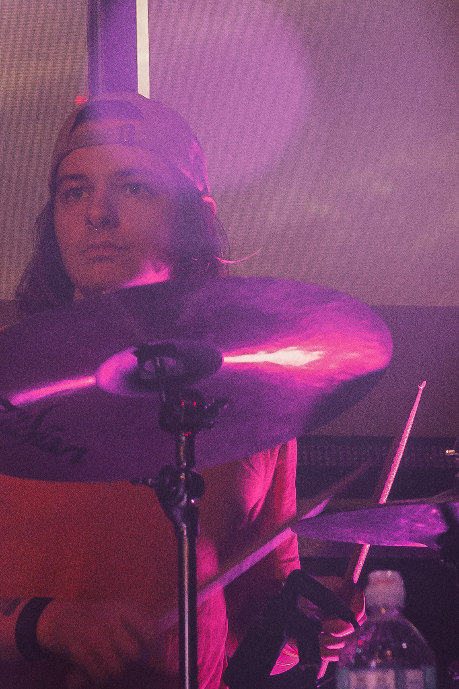
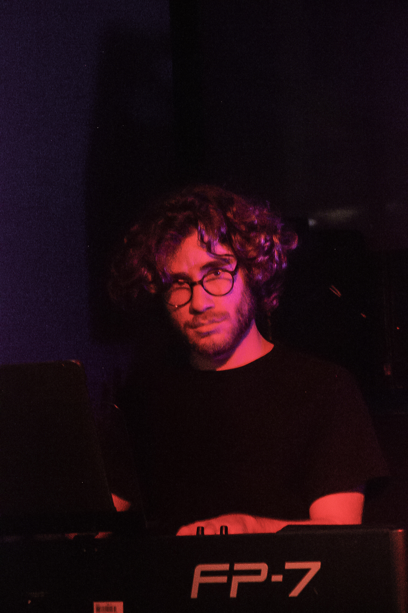
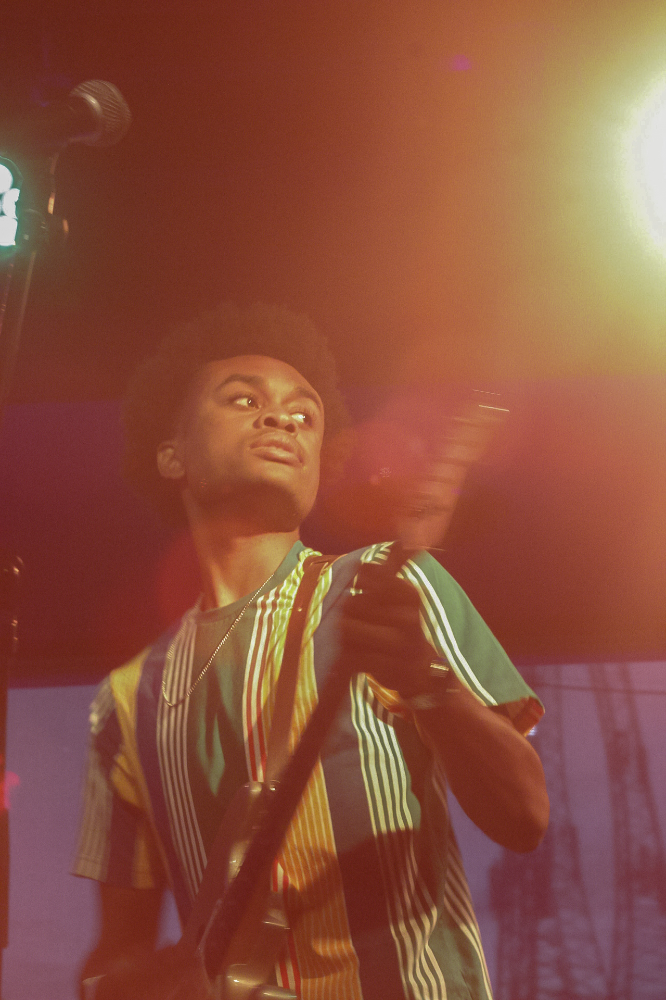
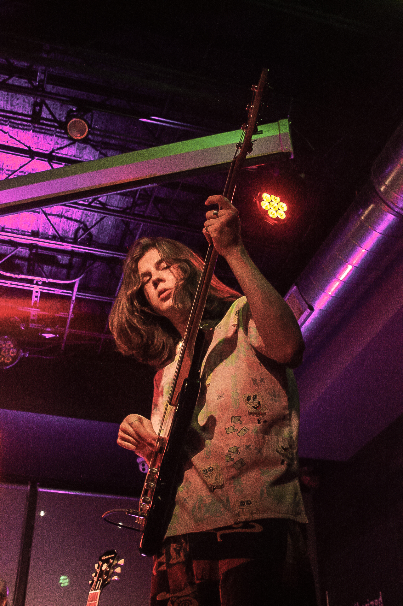

Loose is a funk/rock/alternative band from Normal, Illinois. Loose was born out of the DIY music scene at Illinois State Univeristy, and has performed at a veriety of the DIY venues around ISU, UIUC, UIC, and other schools. The group include Jack on bass, Kendall on guitar, Sean on Drums, and Joey on keys. They're currently working on their debut singles and EP to be released in 2023.



